Конкурсы, награды, фонды, праздники
Аксаков Сергей Тимофеевич
Аксаковский праздник
Аксаковские чтения
Фольклорный праздник
Аксаковский праздник проводится накануне дня рождения писателя С.Т. Аксакова в первых числах октября. Первый прошел в 1991 году, объявленном по инициативе Международной организации ЮНЕСКО Годом Аксакова. Мероприятия проходят по всей республике, однако основными местами праздничного действа являются города Уфа, Белебей и их районы. Установились добрые традиции - в эти дни присуждаются аксаковские стипендии, открываются новые выставки, устраиваются большие фольклорные концерты.
В доме-музее С.Т. Аксакова в эти дни проходят Аксаковские чтения, открываются выставки, звучит музыка. В Аксаковской гимназии г. Уфы почетные гости праздника традиционно проводят Аксаковский урок. Один раз в два года проводятся научные аксаковские конференции, по результатам которых за эти годы издано четыре сборника.
Затем торжества перемещаются в Аксаковский историко-культурный центр «Надеждино», где проходит служба-панихида по Аксаковым, гости знакомятся с музеем семьи Аксаковых и продолжают закладку усадебного парка. На следующий день гости едут в с. Зубово (бывшее имение деда С.Т. Аксакова), где проходит большой фольклорный праздник с участием местных жителей.
На праздник приезжают гости из многих стран мира и регионов России, и всех поражает красочность праздника, гостеприимство жителей Башкортостана. Федеральные и республиканские власти также уделяют Аксаковским дням большое внимание. С 1991 года Аксаковским Фондом и музеем было проведено девятнадцать Аксаковских праздников, которые сразу же приобрели статус международных. Благодаря этим мероприятиям, деятельности Дома-музея С.Т. Аксакова и Аксаковского фонда имя писателя возвращается из многолетнего забвения в литературный и исторический контекст России.
Год 2011 – год юбилейного - двадцатого Аксаковского праздника.
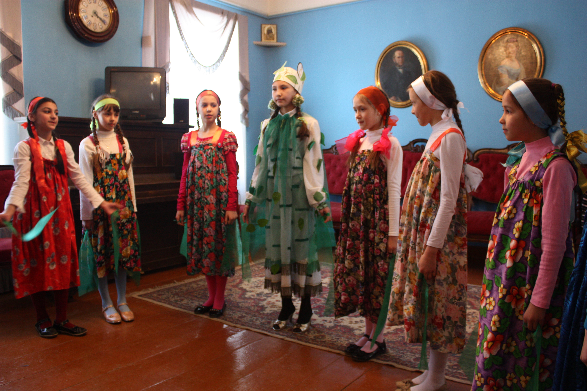
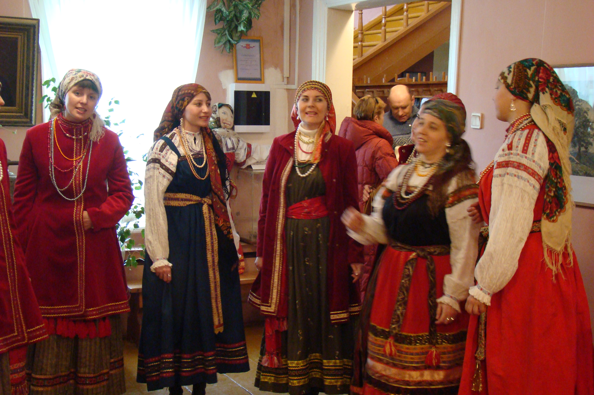
Театрализованные представления и народные гуляния
Сад имени С.Т. Аксакова приглашает гостей на концерт и театрализованное представление по сказке С.Т. Аксакова «Аленький цветочек». В микрорайоне Шакша проходит концерт детских творческих коллективов. В уфимском Саду имени Аксакова проходят массовые народные гуляния «Аксаковские посиделки». Здесь представлена широкая музыкально-развлекательная программа, организуются различные игры и викторины по произведениям Сергея Аксакова. В центре парка, на специально установленной сцене, проходит концерт мастеров искусств Башкортостана с участием фольклорных ансамблей «Мирас» и «Узорица», народного хора украинской песни «Кобзарь», ансамбля русской песни «Милый мой хоровод», вокального ансамбля «Колечко».
Студенты театрального факультета Уфимской государственной академии искусств имени Загира Исмагилова готовят для зрителей красочное театрализованное представление. Завершается оно запуском в небо воздушного Аленького цветочка - символа вечности Аксаковского наследия.
Аксаковский бал
Неотъемлемой частью аксаковских праздников стали балы. Они проходят для студентов, школьников и даже для дошкольников.
В дверях гостей встречают молодые люди во фраках: «Милостивые сударыни, рады видеть вас на нашем празднике, пожалуйста, заходите, просим!»... Светские пары, прогуливающиеся под руку и мило о чем-то беседующие, прекрасные дамы в завораживающих нарядах, очаровательная музыка того времени. Все улыбаются друг другу и говорят лишь: пожалуйста, проходите, присаживайтесь, будьте так добры, будьте любезны, да, конечно... По размаху и красоте аксаковские балы не уступают тем, что описаны в произведениях А..С. Пушкина и Л.Толстого, а в чем-то даже их превосходят. Несколько сотен пар в исторических костюмах исполняют танцы, модные в то время.
Балы для студентов вузов и учащихся средних специальных учебных заведений проходят после торжественного вручения аксаковских стипендий. Театр оперы и балета, фойе городского дворца культуры становятся на несколько часов торжественной бальной залой.
Традиционно в осенние дни проходят и аксаковские балы для школьников. Учащиеся гимназий и лицеев шьют костюмы, разучивают старинные бальные танцы, готовят концертные номера. Такие балы старшеклассников проходят в фойе театра оперы и балета, а также в мемориальном доме-музее С.Аксакова. Традиционно в таких балах участвуют учащиеся школ № 11, 3, 45 и др.
Красивая и добрая традиция проведения аксаковских балов завоевывает все большее число сторонников. Таких балов ждет с нетерпением молодое поколение Уфы.
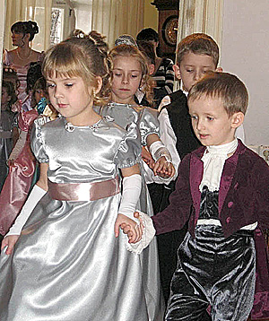
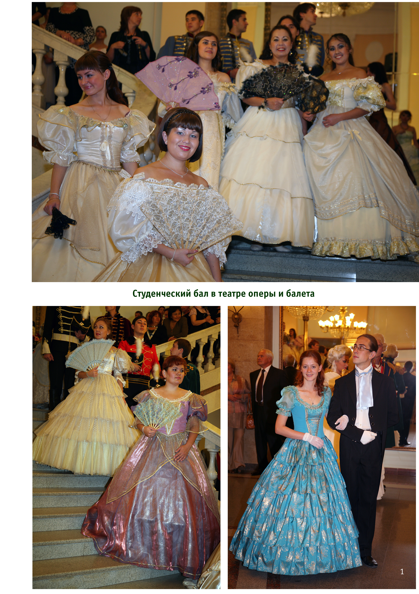
Аксаковский фонд
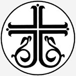
В 1992 году группой писателей, художников, предпринимателей, руководителей предприятий был создан Аксаковский фонд как структурное подразделение Международного фонда славянской письменности и культуры, который своей целью поставил восстановление Аксаковских мест в Башкирии, пропаганду творческого наследия семьи Аксаковых, связь со славянскими странами, где свято имя И.С. Аксакова, и Русским Зарубежьем. Фонд возглавил известный писатель и общественный деятель, вице-президент Международного фонда славянской письменности и культуры, секретарь Союза писателей России Михаил Чванов, который продолжает руководить им и по сей день.
Михаил Чванов так рассказывает о создании Фонда: «На самом деле Аксаковскому фонду больше лет. Практически он начал действовать с середины 1980-х гг., со времени начала подготовки к празднованию 200-летия со дня рождения С.Т. Аксакова, и был зарегистрирован Минюстом Республики Башкортостан, случайно или не случайно, в день Святого Георгия Победоносца, 7 мая 1992 года. Первый благотворительный взнос на только что открытый счет внес ИКЦ «Лигас», созданный выпускником УАИ Виктором Григорьевичем Петровым, который стал членом правления Аксаковского фонда».
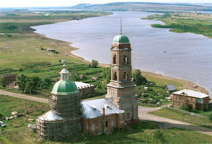
С самого начала своего существования Аксаковский фонд сотрудничает с Мемориальным домом-музеем С.Т. Аксакова в Уфе, поскольку основные программы их тесно связаны. Инициативы Аксаковского фонда были поддержаны Указами Президента Республики Башкортостан.Аксаковский праздник, традиционно отмечающийся из года в год, стал международным и, по общему признанию, одним из самых ярких и многонациональных праздников нынешней России.
Членами правления Аксаковского фонда являются архиепископ Уфимский и Стерлитамакский Никон и Верховный муфтий России Шейх-уль-Ислам Талгат Таджуддин.
По общему признанию, Аксаковский фонд внес огромный вклад в дело межнационального и межконфессионального согласия в республике. По его инициативе Указами Президента РБ в Уфе восстановлен Аксаковский сад, создана Аксаковская гимназия, которая поддерживает тесные контакты с Аксаковской гимназией в Болгарии в г. Пазарджик, учреждена Всероссийская литературная премия им. С.Т. Аксакова, Уфимским горсоветом учреждены четыре Аксаковские студенческие стипендии, создан уникальный в своем роде Аксаковский историко-культурный центр «Надеждино» под Белебеем, где восстановлена усадьба семьи Аксаковых, православный храм, построен пруд, при центре работает воскресная школа и школа народных ремесел.
Премия имени С.Т. Аксакова
Премия имени Сергея Тимофеевича Аксакова была учреждена правительством Башкирии в 1996 году по предложению Международного фонда славянской письменности и культуры, Союза писателей России и Союза писателей Башкирии. Она вручается раз в три года российским писателям, публицистам и литературным критикам за создание высокохудожественных произведений, проникнутых любовью к родной земле, большой вклад в развитие духовно-нравственных традиций российской литературы, патриотическую общественную деятельность. Цель премии - дальнейшее развитие многонациональной культуры России, укрепление единства её народов.
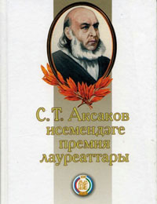
УКАЗ
Президента Республики Башкортостан
«О Всероссийской литературной премии имени С.Т. Аксакова»
(выдержки из указа)
«В целях сохранения и развития культурного наследия народов России и Башкортостана, поддержания благородных традиций гуманизма, патриотизма и высокой духовности, заложенных нашими великими земляками - семьей Аксаковых, а также в связи с предложениями Международного фонда славянской письменности и культуры, Союза писателей России и Союза писателей Республики Башкортостан ПОСТАНОВЛЯЮ:
1. Отметить, что проводимые в Республике Башкортостан по инициативе Башкирского (Аксаковского) отделения Международного фонда славянской письменности и культуры Международные Аксаковские праздники приобрели традиционный и массовый характер, способствуют укреплению дружбы, сотрудничества, культурного взаимодействия народов республики, сохранению и обновлению исторического духовного достояния России и Башкортостана.
2. Учредить от имени Президента Республики Башкортостан совместно с международным фондом славянской письменности и культуры, Союзом писателей России и Союзом писателей Республики Башкортостан ежегодную Всероссийскую литературную премию имени С.Т.Аксакова.
3. Установить, что Всероссийская литературная премия имени С.Т. Аксакова присуждается писателям, публицистам и литературным критикам, произведения и общественная деятельность которых соответствуют высоким художественным и духовно-нравственным традициям российской литературы, утверждает идеалы любви к родной земле и ее народам и имеет общероссийское признание.
Президент Республики Башкортостан М. РАХИМОВ.
Уфа, Дом Республики. 28 августа 1996 года.
Лауреаты литературной премии имени С.Т. Аксакова
1996 год - Василий Белов
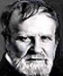
Василий Белов родился 23 октября 1932 г. в вологодской деревне Тимонихе в семье крестьянина, в 1943 г. погибшего на войне. Окончив сельскую семилетнюю школу, весной 1949 г. уехал в город Сокол, где получил специальность плотника и столяра. Потом освоил специальность моториста-дизелиста, а позже и - электромонтера. Во время службы в армии выучился на радиотелеграфиста. Жил в Вологде, писал очерки, статьи, стал сотрудником районной газеты, но больше всего любил поэзию и писал стихи.
Первой его книгой, появившейся в 1961г., был сборник стихов "Деревенька моя лесная". В том же году была опубликована повесть "Деревня Бердяйка", с которой начался прозаик Белов. Окончив Литературный институт, вернулся в Вологду, отдавая все силы и время литературному творчеству. В 1964-1967 г.г. были написаны рассказы "На Росстанном холме", "Весна", "За тремя волоками", повесть "Привычное дело". В 1969 - "Бухтины вологодские". В 1970-е публикует повести, составившие цикл "Воспитание по доктору Споку", "Плотницкие рассказы", в 1979-1981 г.г. пишет книгу "Лад" - собрание очерков о северной русской деревне, поэму о русском человеке. В 1987 г. публикует два романа - "Кануны" и "Все впереди", затем - книгу "Такая война..." (1989), куда включил роман и рассказы. В 1989-1991 г.г. пишет несколько произведений для детей: повесть "Старый да малый", сказку "Родничок". В 1996 г. вышла повесть "Медовый месяц". По силе и яркости своего творчества В.И. Белов - один из самых значительных русских писателей. Признанием его заслуг стало присуждение Государственной премии 1981 года, награждение орденом Трудового Красного Знамени в 1983 году и орденом Ленина в 1984 году.
2000 год - Валерий Ганичев
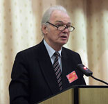
Валерий Николаевич Ганичев родился на станции Пестово Ленинградской (ныне Новгородской) области в 1933 году. После завершения обучения на историческом факультете Киевского университета (1956) работал в г. Николаеве. С 1960 г. в Москве занимался комсомольской и журналистской работой (заместитель главного редактора журнала «Молодая гвардия»). С 1968 по 1978 гг. - директор издательства «Молодая гвардия». С 1978 по 1980 гг. - главный редактор газеты «Комсомольская правда». В 1994 году Валерий Ганичев становится председателем Союза писателей России - крупнейшей творческой организации страны. При его участии осуществилось свыше 50 писательских, культурологических, патриотических проектов - программа "Малые города", литературно-патриотические чтения "Прохоровское поле", свыше 30 общероссийских премий: Твардовского, Бунина, Фета, Абрамова, Васильева, Лермонтова и т. д.Валерий Ганичев - заслуженный работник культуры РСФСР, член Общественной палаты Российской Федерации, заместитель главы Всемирного русского народного собора, вице-президент Международной славянской академии, академик Международной академии творчества, Международной академии информатизации при ООН, Академии словесности, Петровской академии, доктор исторических наук, профессор.
2002 год - Михаил Чванов
.jpg) Михаил Андреевич родился 25 июля 1944 года в предгорьях Урала в д. Ст. Михайловка Салаватского района Башкирии. Как спортсмен-спелеолог руководил экспедицией, первой исследовавшей крупнейшую пещерную систему Урала, за что в 1967 году Министерством геологии СССР был награжден почетным знаком «Отличник разведки недр».
Михаил Андреевич родился 25 июля 1944 года в предгорьях Урала в д. Ст. Михайловка Салаватского района Башкирии. Как спортсмен-спелеолог руководил экспедицией, первой исследовавшей крупнейшую пещерную систему Урала, за что в 1967 году Министерством геологии СССР был награжден почетным знаком «Отличник разведки недр».
Автор 20 книг прозы и публицистики. Лауреат Большой литературной премии России за 2005 год и премии им. К. Симонова Международной ассоциации писателей маринистов и баталистов (за роман-поиск «Загадка штурмана Альбанова» и цикл повестей и рассказов о трагедии Югославии). Русской Православной церковью Михаил Андреевич награжден орденом Преподобного Сергия Радонежского III степени. Михаил Чванов - известный писатель, секретарь Союза писателей России, вице-президент Международного фонда славянской письменности и культуры, председатель Аксаковского фонда.
2005 год - Валентин Распутин
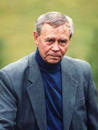
Валентин Распутин родился 15 марта 1937 в с. Усть-Уда на Ангаре, ныне подтопленного водохранилищем Братской ГЭС. Окончил Иркутский университет в 1959 г. Публиковаться начал в местной печати с очерков и рассказов. Крупным успехом Распутина, принесшим ему литературную славу, стала повесть "Деньги для Марии" (1967), в которой выразилась основная идея писателя - торжество добра и справедливости над миром корысти и своеволия.Затем последовали повести и рассказы ("Последний срок", 1970, "Живи и помни", 1974, "Прощание с Матёрой", 1976 и др.). В образах его героев выражается огромное душевное богатство русского человека - доброта, совестливость, любовь к Родине, отзывчивость, сострадание, взаимопомощь. Событием в идейной жизни общества стала повесть Распутина "Пожар" (1985). Это суровое художественное предостережение о грядущей народной беде: духовном упадке, следом за которым идет упадок социальный.
Распутин был одним из самых деятельных противников "поворота северных рек" (проект Бергера был отменен в июле 1987). В 1989-1991 г.г. - депутат Верховного Совета СССР. Состоял в руководстве Русского Национального собора и Фронта национального спасения.
2008 год - Анатолий Генатулин
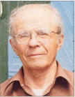
Талха Гиниятуллин (Анатолий Генатулин) родился 1 мая 1925 года в деревне Уразово Учалинского района Башкортостана. Окончив семь классов, учился в ФЗО (школе фабрично-заводского обучения), работал на заводе в Белорецке. Началась Великая Отечественная война, прибавив себе один год, Талха ушел на фронт. Будущий писатель воевал в Карелии, затем на территории Польши, Германии. За ратные подвиги был награжден орденом Славы III степени, медалями. Сейчас Анатолий Генатулин (псевдоним) - известный писатель, живет в Москве, пишет на русском языке. Книги его издавались в Польше, Чехии, Китае, Америке и в переводе на башкирский язык в Уфе. Первый сборник рассказов «Рябиновая гора» Талха Гиниятуллин издал в 1969 году в Москве. От первого рассказа, который появился в печати в 1961 году, до первой книги прошло восемь лет, до второго сборника рассказов «Аю таш» - еще шесть лет, третья книга «Золотая моя колыбель» вышла в 1984 году. Каждый год он вместе с женой приезжает летом на родину в Уразово - живописный уголок Башкортостана. Вот почему в сборниках рассказов «Рябиновая гора», «Аю таш», «Золотая моя колыбель», повести «Черное поле» за простотой и непосредственностью скрывается духовное величие и историческая мудрость.2008 год - Станислав Куняев
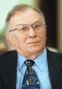
Станислав Куняев родился 27 ноября 1932 года в г. Калуга. В 1957 году окончил МГУ им. Ломоносова. Выпустил книги стихов «Землепроходцы», «Звено», «Метель заходит в город», «Ночное пространство», «Избранное: стихотворения и поэмы». Приобрел известность не только как поэт, но и как переводчик. Куняев издал свои книги в Тбилиси, Душанбе, Фрунзе. Он автор более десяти сборников переводов произведений поэтов из различных республик бывшего Советского Союза. Станислав Куняев - писатель с большим стажем, принят в Союз писателей России в 1961 году. Много лет он является главным редактором авторитетного московского журнала «Наш современник». С. Куняев - поэт, публицист, сопредседатель правления Союза писателей России.2010 год - Константин Скворцов
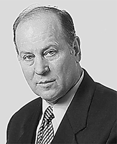
Скворцов Константин Васильевич (р. 15.04.1939, Тула), поэт, драматург, член СП России (1969), лауреат Всероссийской литературной премии им. А. И. Фатьянова (1996) и М. Ю. Лермонтова (2000). С 1975 по 1992 года был ответственным секретарем Союза писателей Челябинской области и России. Первые поэтические сборники: “На четырех ветрах” (1966), “Лунная река” (1968), “Стихи. Поэма” (1970), “Ущелье крылатых коней”, “Отечество мы не меняем” (1975), “Алена Арзамасская” (1978). Премьера 1-го спектакля, поставленного по произведению Скворцова, состоялась 23 марта 1972 года в Челябинском ТЮЗе – “Ущелье крылатых коней”. В разные годы в театрах Челябинской области были поставлены: “Алена Арзамасская”, “Кибальчич”, “Ментуш”, “Легенда о белом дереве”, “Западная трибуна”, “Пока есть музыка и память”, “Бестужев-Марлинский”, “Георгий Победоносец”. Большинство пьес Скворцова отражают события российской истории, критика отмечает отразившееся в них “высокое чувство историзма” автора.Стипендия им. С.Т. Аксакова
Стипендия для студентов вузов и учащихся средне-специальных учебных заведений была учреждена Уфимским городским советом в 1991 году в целях поощрения юношей и девушек, особо отличившихся в изучении и популяризации творческого наследия С.Т. Аксакова.
Претенденты – авторы научно-исследовательских и творческих работ в области истории, филологии, педагогики и искусства и т.д., обязательно связанных с жизнью и деятельностью выдающегося русского писателя С.Т.Аксакова с его семьи. Эти работы выполняются в рамках курсовых и дипломных проектов, факультативных и спецкурсов.
Ежегодно присуждаются 4 стипендии сроком на 1 год. Вручение премий происходит торжественно на сцене Башкирского государственного театра оперы и балета или в мемориальном доме-музее С.Т. Аксакова в дни Международного Аксаковского праздника, в октябре месяце.
С 1992 года по настоящее время вручено более 60 премий за различные творческие и научно-исследовательские работы. В числе лауреатов студенты уфимских вузов, а также творческая группа Уфимской академии искусства.
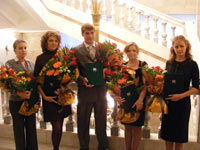
Школьные стипендии и премии им. С.Т. Аксакова
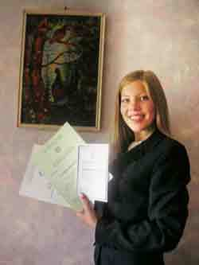
В Аксаковской гимназии ежегодно проходит поощрение обучающихся детей. Поощрения выносятся советом гимназии по предоставлению педагогического совета, классного руководителя. Ребята, претендующие на аксаковскую премию или стипендию должны не только отлично учиться, но и участвовать в олимпиадах, занимать там призовые места, выполнять творческие работы литературного, художественного и музыкального значения.Аксаковская премия – знак отличия лучшего ученика года. Лауреатам именных премий вручается денежная премия, их имена заносятся в Книгу лауреатов.
Аксаковская стипендия присуждается учащимся 3-11 классов, достигших высоких результатов в олимпиадах, конференциях, конкурсах, соревнованиях, выставках различных уровней.
Бикбаев Баязит Гаязович
Положение о литературной премии имени
Баязита Бикбая – писателя, поэта и драматурга Республики Башкортостан.
Литературная премия им. Баязита Бикбая, выдающегося башкирского поэта, лауреата Государственной премии Республики Башкортостан имени Салавата Юлаева, заслуженного деятеля искусств БАССР, учреждается с 2009 года, в канун 100-летия со дня рождения Баязита Бикбая.
1. Учредители премии. Цели и задачи.
Литературная премия имени Б. Бикбая учреждается главой Администрации муниципального района Куюргазинский район в честь уроженца д. Калтаево Куюргазинского района, великого поэта, драматурга, прозаика Республики Башкортостан Баязита Гаязовича Бикбаева.
Главными задачами являются:
- пропаганда и популяризация имени и творчества поэта;
- поощрение творческой деятельности молодых;
- воспитание чувства дружбы между народами многонациональной республики и их культурное сближение;
- возрождение, сохранение и укрепление духовно-нравственных традиций.
2. Условия и порядок присуждения премии.
Премия присуждается ежегодно в день рождения поэта Б. Бикбая на его родине – в д. Калтаево Куюргазинского района. В соискании на премию принимают участие творческие личности (допускаются неопубликованные произведения). Соискатели должны быть связаны своим творчеством или биографией с Куюргазинской землей. В их произведениях художественной прозы, драматургии или поэзии должны продолжаться традиции творчества Б. Бикбая, отражаться идеи патриотизма. Право выдвижения кандидатур на соискание премии предоставляется литературно-художественным объединениям, учебным заведениям, трудовым коллективам, редакциям, отдельным гражданам. Организационную работу комиссии обеспечивает Администрация муниципального района Куюргазинский район. Документы и произведения на соискание премии по итогам года предоставляется в комиссию в течение ноября-декабря. Вручение премии и соответствующего диплома производятся в день рождения поэта на его родине – в д. Калтаево Куюргазинского района.
3. Требования к авторам произведений.
Авторы, желающие принять участие в соискании премии, присылают поэтические и прозаические произведения на башкирском, русском и других языках по адресу: 453360, с. Ермолаево, пр. Мира, 10, Администрация МР Куюргазинский район, каб. 302, 204.
Произведения должны быть отпечатаны или переписаны разборчивым почерком на стандартных машинописных листах (газетные вырезки не рассматриваются). Также указывается адрес, возраст, профессия автора, членство в союзе писателей, литобъединениях.
Злобин Степан Павлович
Литературная премия имени Степана Злобина.
За достижения в области литературного краеведения и высокий профессионализм в Башкортостане вручается премия имени Степана Злобина. Премия учреждена в 1996 году Союзом писателей РБ. Это награда для литераторов, пишущих на русском языке и присуждается один раз в два года за лучшее произведение. Первым ее лауреатом стал известный писатель-краевед Мурат Рахимкулов. Также этой премии были удостоены: Александр Филиппов, Роберт Паль, Георгий Кацерик, Леонид Лушников, Ильяс Валеев, Камиль Зиганшин, Юрий Горюхин, Владимир Денисов, Юрий Андрианов, Марсель Гафуров, Рим Ахмедов, Ямиль Мустафин, Алла Докучаева, Михаил Ерилин.
Мажит Гафури
Фонд культуры имени Мажита Гафури по увековечиванию памяти поэта
Целью создания и деятельности Фонда является: поддержка и развитие культуры, науки, литературы и искусства в Республике Башкортостан, содействие проведению ежегодных Гафурийских чтений, дня памяти Гафури, сохранению мест, связанных с именем М. Гафури в Уфе, Республике Башкортостан и за ее пределами, пропаганда творчества М. Гафури и других классиков башкирской литературы, искусства, систематизация литературного наследия Гафури, исследование его жизни и творчества.
За время существования фонда в рамках выполнения поставленных целей и задач:
• организована и проведена Российская научно-практическая конференция «Взаимопонимание культур и проблемы национальной идентичности», посвященная 125-летию со дня рождения Мажита Гафури;
• издан набор открыток «Мажит Гафури в Уфе» (2005, 2006);
• буклет с информацией о фонде, календари (2004, 2005);
• члены фонда приняли активное участие и выступили с докладами в научно-практических конференциях, торжественных мероприятиях, посвященных 125-летию Мажита Гафури, 100-летию Мусы Джалиля в Уфе, Екатеринбурге, на родине Мусы Джалиля в деревне Мустафа Оренбургской области;
• выступили с докладом в конференции, посвященной 450-летию вхождения Башкортостана в состав России, организованной Башкортостанским филиалом Российского Фонда культуры и обществом краеведов г. Уфы, приняли участие в издании сборника докладов;
• отснят документально-художественный фильм «Сын Большого Урала» (Биографический очерк о жизни и деятельности М. Гафури).;
• учреждена общественная премия имени М. Гафури, решением совета фонда общественной премией имени М. Гафури и медалью лауреата награждаются за достижения в области литературы, искусства, общественной деятельности;
• в 2006 году коллективным членом фонда стало татаро-башкирское общество культуры имени М. Гафури Екатеринбургской области. При финансовой поддержке общества в Екатеринбурге изготовлены медали М. Гафури;
• фонд сотрудничает с Объединенным музеем писателей Урала в г. Екатеринбурге, принимает активное участие в ежегодных конференциях, проводимых уральцами (2007, 2008), благодаря настойчивой работе Фонда в «Музее писателей Урала ХХ века» представлено творчество М. Гафури;
• совместно с Республиканским историко-культурным центром в селе Килимово Буздякского района провели торжественное мероприятие, посвященное 115-летию со дня рождения Зухры ханум — жены М. Гафури (декабрь, 2007);
• подготовлен и издан сборник стихов, посвященных М. Гафури «Венок Мажиту Гафури» (на русском и башкирском языках) (2008);
• подготовлен и издан сборник М. Гафури «Избранное» на русском языке для учащихся школ в серии «Школьная библиотека» по программе Минобразования РБ, издательство «Китап» (2008);
• организована и проведена церемония возложения цветов к памятнику М. Гафури перед Башкирским государственным академическим театром драмы имени М. Гафури при участии руководства и коллектива театра в связи с 30-летием установки памятника (18 сентября, 2008);
• изданные книги М. Гафури и о нем, газеты и журналы со статьями о творчестве М. Гафури разосланы в башкирско-татарские культурные центры России, ближнего и дальнего зарубежья (2008);
• 22-26 апреля 2009 года в Москве приняли участие в 20-м юбилейном совещании Координационного Совета Международного Движения «Педагоги за мир и взаимопонимание» с участием миротворческих организаций, в работе круглого стола совместно с членами Отделения АПСН «Педагогика мира».
• 30 апреля 2009 года в малом зале БГАТД имени М. Гафури был проведен торжественный вечер, посвященный 5-летию Фонда культуры имени М. Гафури, где были подведены итоги деятельности Фонда. Приняли участие общественность, деятели культуры и науки, гости из Казани, Екатеринбурга, Гафурийского, Буздякского районов РБ.
• 6 октября 2009 года в Мемориальном Доме-музее Мажита Гафури в Уфе состоялся круглый стол на тему: «Идеи гуманизма как путь к планетарному сознанию» с участием деятелей науки, культуры, журналистов, студентов, гостей из Индии мистера Д. Ганди и мистера Ш. Шривастава.
• 28 октября 2009 года был организован и проведен митинг у памятника Мажиту Гафури перед театром в связи со 75-летием со дня его смерти. Прияли участие представители правления Союза писателей РБ, Исполкома Всемирного курултая башкир, общественность, студенты, родственники. Возложили цветы к памятнику и на могилу поэта.
• Прошла межбиблиотечная сессия, приуроченная к 130-летнему юбилею народного поэта Башкортостана Мажита Гафури. В ходе семинара сотрудники библиотек вспомнили, как жил и творил поэт. Подобно мудрым народным сэсэнам творец поэтического слова, поборник правды и обличитель зла Мажит Гафури пользовался огромной любовью и уважением народа. В башкирской литературе он был первым удостоен звания Народного поэта;
• Прошли первые «Гафурийские чтения» в Екатеринбурге под эгидой Уральского отделения РАН, УрГУ, Объединенного музея писателей Урала и общества культуры татар и башкир Свердловской области имени Мажита Гафури (филиала Фонда);
• Совместно с БашГУ организовали и провели Межрегиональную научно-практическую конференцию «Творчество Мажита Гафури — источник идей справедливого общества и мира»;
• Совместно с Тюрксой подготовлена и издана книга стихов Мажита Гафури на башкирском и турецком языках в Анкаре;
• создан и активно работает сайт Фонда культуры имени Мажита Гафури gafuri.ucoz.ru.
Деятельность Фонда находит все больше своих сторонников, почитающих творчество великого соотечественника - интернационалиста по духу, одного из величайших гуманистов человечества. Поэтому в задачи Фонда входит перевод произведений Мажита Гафури на основные мировые языки, создание энциклопедии «Мажит Гафури» в виде книги и интернет-энциклопедии, работа по изданию полного собрания сочинений Мажита Гафури.
Премия имени Мажита Гафури и медаль
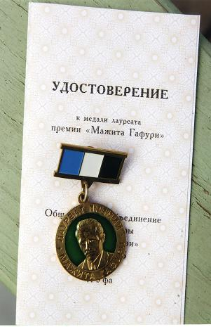 | 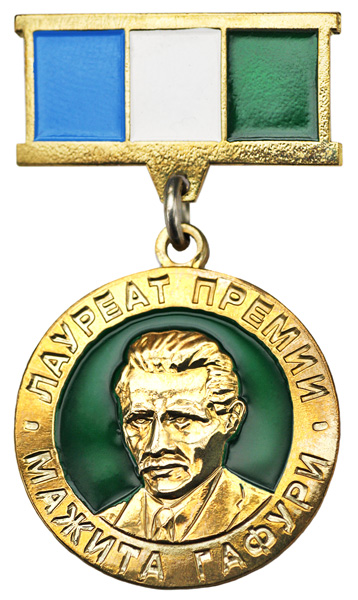 |
\Общественным фондом культуры имени Мажита Гафури учреждена общественная премия имени Мажита Гафури и медаль, которой награждаются представители Башкортостана и других регионов за заслуги в области литературы, искусства и культуры, за активную общественную деятельность.
Мустай Карим
Худайбердин Шагит Ахметович
Премия им. Ш.А. Худайбердина
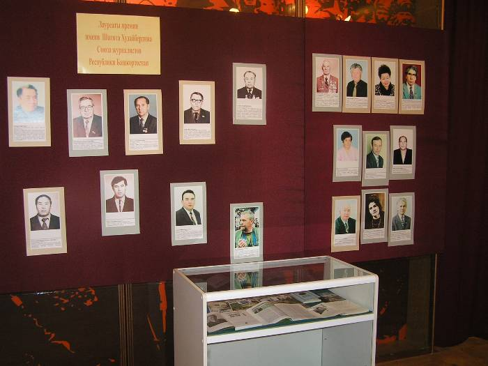
Имя Шагита Ахметовича Худайбердина прочно вписано в историю башкирской литературы и журналистики. Проводятся ежегодные конкурсы его имени. Среди лауреатов премии - журналисты республиканских изданий, фотокорреспонденты, корреспонденты радио и телевидения, публицисты и писатели.Первым лауреатом премии в 1989 году стал М. Кутлугаллямов и авторский коллектив газеты «Советская Башкирия» (А. Козлов, А. Шакиров и В. Шмаков). Лауреатами премии в последующие годы стали:
1990 год - С.Орлов. Р.Х. Насыров;
1991 год – Я. Якшидавлетов, Э. Живитченко;
1992 год - Р.Ш. Касимов, М. Султанов, Р. Утяшев;
1993 год – Р. Зиннуров, Л. Калмацкий и Р. Мурзагалин, Н. Юрасов;
1994 год – Ф. Абдуллин, Ш. Гильманова, М. Гилязев, Р. Ханнанов;
1995 год - Р. Бадыков, Я. Бурангулов, Г. Брехова, Р. Уразгулов;
1996 год – С. Бадретдинов, С. Имангулов, С. Сукбаев и Ф. Халитова.
В соответствии с постановлением Кабинета Министров РБ в 1996 году утверждено Положение о премии имени Шагита Худайбердина для поощрения творческой активности журналистов республики начиная с 1997 года.
Выдержки из Постановления:
«Для поощрения творческой активности журналистов Правительством Республики Башкортостан с 1 января 1997 года учреждаются три ежегодных премии имени Шагита Худайбердина - видного государственного и общественного деятеля, талантливого башкирского публициста и писателя.
(в ред. Постановления Правительства РБ от 25.09.2003 N 235)
1. Премии Правительства Республики Башкортостан имени Шагита Худайбердина присуждаются журналистам, а также коллективам журналистов за лучшие произведения в области журналистики:
репортажи, очерки, документальные повести и публицистические статьи; теле- и радиопередачи; серии фоторабот, опубликованные в республиканских, российских или зарубежных печатных либо электронных средствах массовой информации; материалы, изданные отдельной книгой.
В работах должны раскрываться образы современников, богатство национальных культур и дружба народов, вопросы гражданского мира и согласия в обществе, социально-экономического развития Республики Башкортостан…»
Среди представителей средств массовой информации прошлых лет уже более 60 человек имеют звание лауреатов. В числе номинантов такие мастера слова, как Марсель Кутлугаллямов, Алла Докучаева, Рауф Насыров, Ризван Хажиев, Гульфия Янбаева, Юрий Коваль, Юрий Узиков и многие другие известные журналисты.
Ежегодно список кандидатов публикуется в республиканских периодических изданиях. Вручение премий, по сложившейся традиции, проходит торжественно в селе Худайбердино. Творчество лауреатов ярко свидетельствует: имя Шагита бессмертно, память о нем — на века.